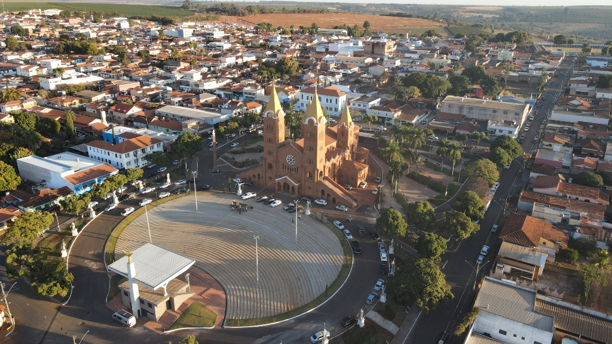
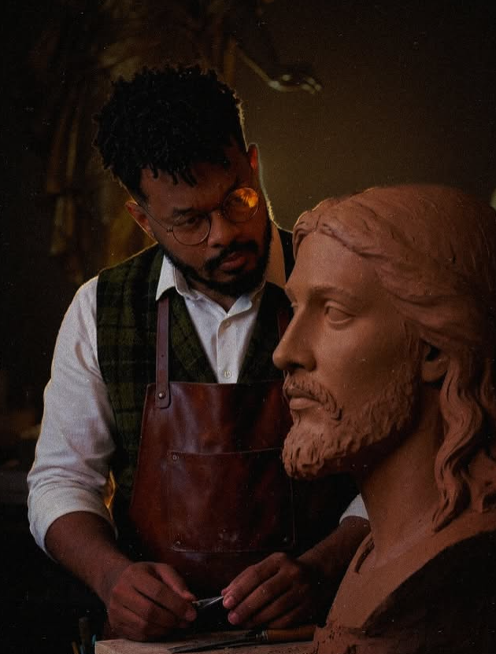

Material:
Dimensões:
Peso Estimado:
Encomendante:
Ateliê especializado em monumentos de praça, arte sacra barroca, vitrais e mosaicos. Autor do conjunto monumental dos 12 Apóstolos da Basílica de Romaria e dos Arcanjos de Monte Carmelo.

Santuário Basílica de N. Sra. da Abadia • 2,60m de altura cada • Resina Estrutural Marmorizada
Projetos de impacto urbano e sagrado concebidos por Carlos Pietá para santuários, praças públicas, torres e arquitetura clássica.
Desenvolvimento com projeto executivo tridimensional, resistência estrutural e ancoragem para áreas abertas.
A união entre a poética do barroco italiano clássico e as mais avançadas técnicas de resina estrutural marmorizada reforçada com fibra de vidro — conferindo resistência comparável à rocha com leveza e precisão plástica.
Desenvolvimento de protótipos em argila e maquetes tridimensionais inspiradas em São João de Latrão e mestres italianos, com estudo minucioso de panejamentos e expressões.
Laminação em resina especial com reforço de fibra de vidro de alta densidade. Acabamento marmorizado clássico com proteção contra raios solares e umidade extrema.
Graças à tecnologia de resina estrutural, as esculturas de grande porte (~300kg) são transportadas com segurança e fixadas sobre bases sólidas em praças cívicas ou torres históricas.
Acabamento com textura de mármore clássico de alta resistência.
Vidro colorido de alta qualidade com chumbo tradicional e queima a fogo.
Tesselas nobres para murais eclesiásticos e fachadas arquitetônicas.
Fundição clássica para bustos e efígies comemorativas.
As criações de Carlos Pietá acolhem milhões de devotos e visitantes em santuários e praças públicas de Minas Gerais.
"Enxergar que as pessoas veem beleza em algo que você fez é gratificante. Não tenho palavras para descrever... O difícil mesmo é harmonizar uma escultura para que ela fique bonita e viva no espaço público."
Em entrevista sobre o Conjunto dos 12 Apóstolos de Romaria (MG)
Destaque para o acabamento marmorizado e a inspiração em São João de Latrão em Roma.
Reportagem sobre a chegada das estátuas dos santos arcanjos e a revitalização cívico-religiosa.
+500.000 fiéis e turistas acolhidos anualmente pelo conjunto escultórico.

"A arte pública e sacra é a ponte visível entre o transcendente e o cotidiano das cidades."
— Carlos Pietá (@carlospieta)Referência em Escultura Barroca e Monumentos no Brasil
Carlos Pietá é um escultor, vitralista e artista plástico brasileiro radicado em Minas Gerais, amplamente reconhecido por suas monumentais obras sacras e cívicas inspiradas no barroco italiano e nas raízes da arte clássica europeia.
Entre seus projetos de maior repercussão nacional está o Conjunto Monumental dos 12 Apóstolos no Santuário Basílica de Nossa Senhora da Abadia (em Romaria - MG), com figuras de 2,60 metros de altura inspiradas na Basílica de São João de Latrão em Roma, além dos Arcanjos Gabriel, Miguel e Rafael instalados em Monte Carmelo e Romaria.
Com domínio técnico que abrange a modelagem clássica, resinas estruturais de alta tecnologia, vitrais e mosaicos murano, seu trabalho embeleza praças públicas, santuários e edifícios em Minas Gerais e diversos estados brasileiros.
Tratamento com resina estrutural resistente ao sol e intempéries.
Estudos de escala e integração com o patrimônio histórico e urbano.
Informações essenciais para prefeituras, padres, secretarias de cultura e arquitetos.
Canal para dioceses, santuários, prefeituras, arquitetos e particulares interessados em esculturas monumentais, vitrais ou bustos comemorativos.
Obras produzidas com rigor clássico e materiais modernos de alta durabilidade, prontas para intempéries em praças públicas, torres e fachadas.
Conectando ao WhatsApp de Carlos Pietá...